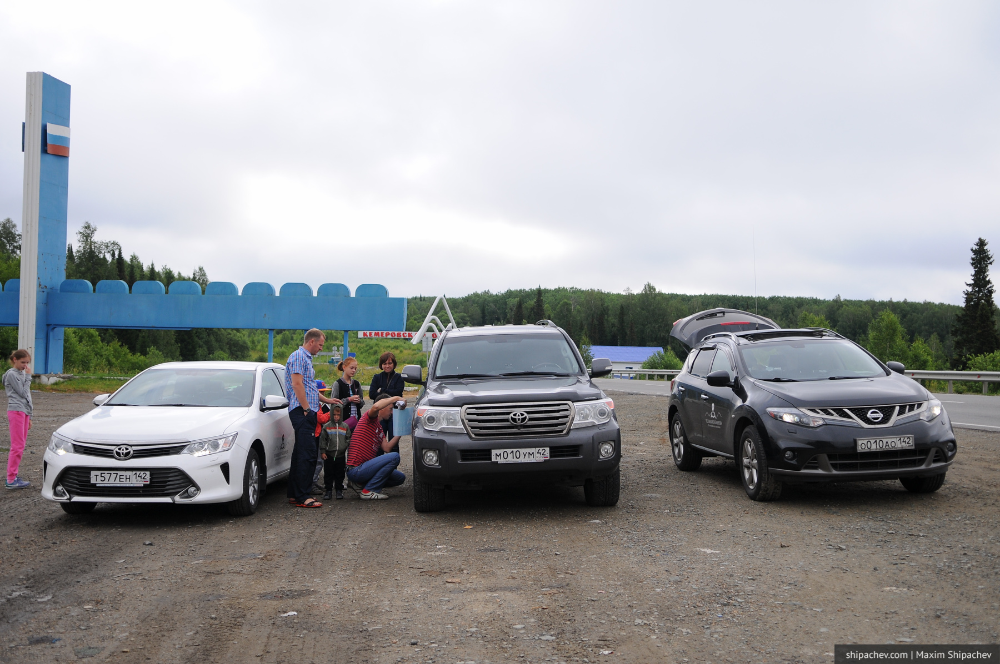
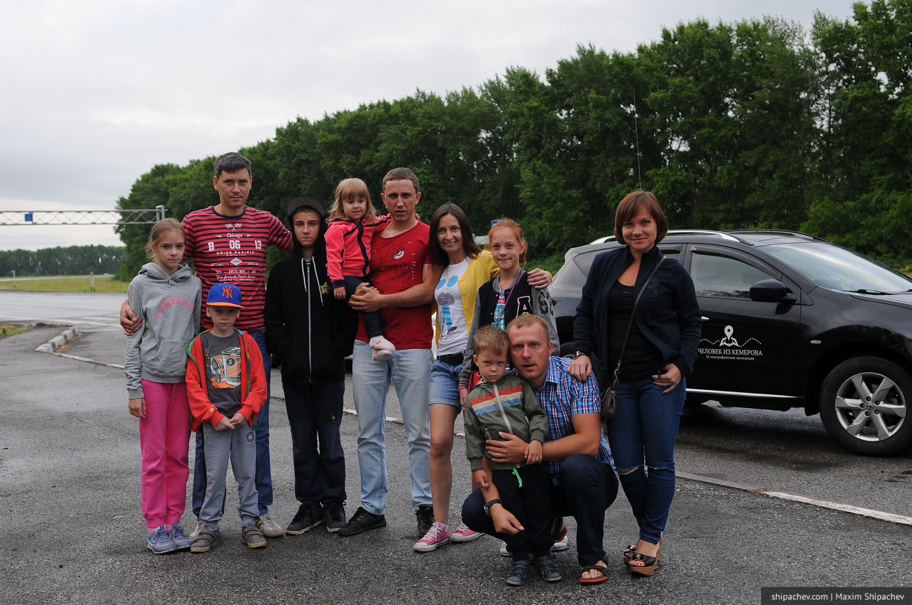
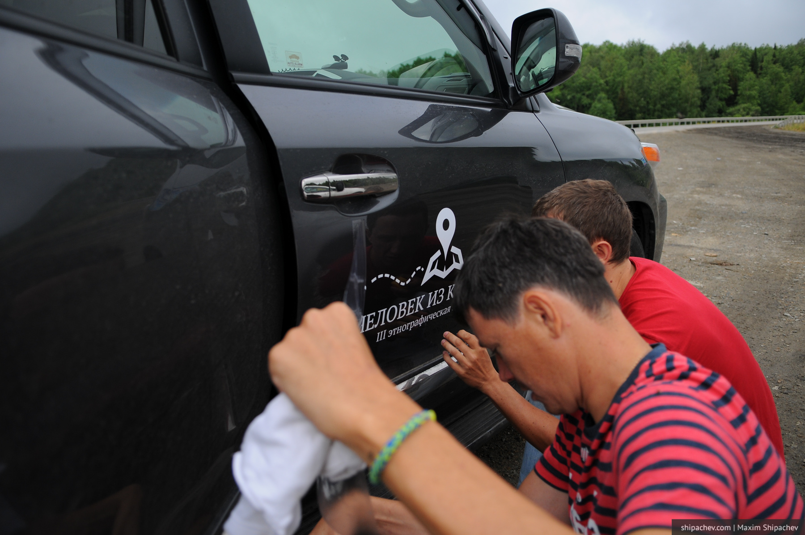
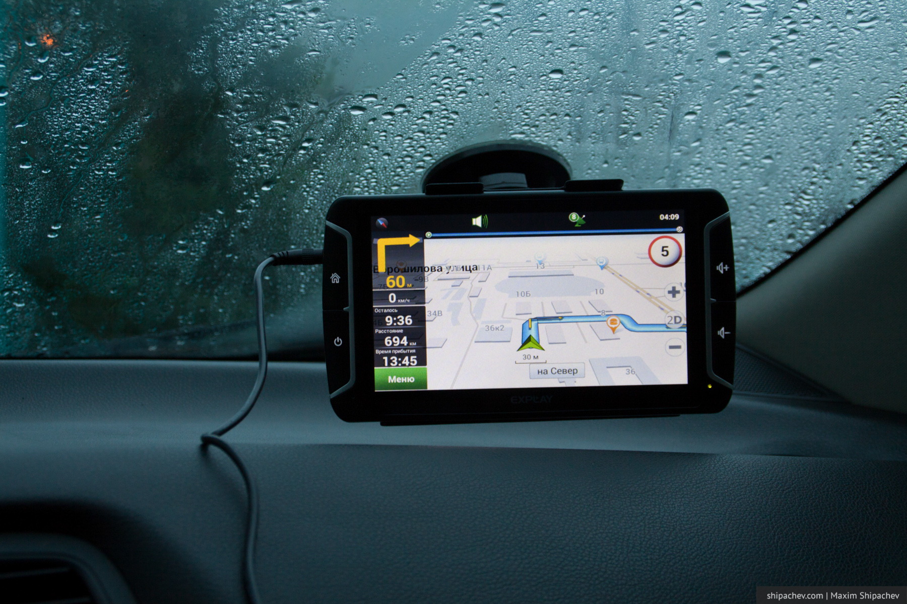

Три года назад мы посетили на автомобиле пару десятков российских городов, съездили на Украину, проехались по российскому черноморскому побережью, заехали в Абхазию. В прошлом году съездили в Грузию, заскочив в Турцию.
Путешествовали на одном автомобиле, но идея путешествий, наверное, заражает, и в этом году решили ехать уже компанией друзей. В качестве наиболее удалённого ориентира было выбрано озеро Иссык-Куль в Киргизии. Но формат путешествия, по-большому счёту, остался прежним. Наша цель не столько отдых и пляж, сколько путешествие и знакомство с новыми странами, городами и людьми.
Маршрут нарисовался такой:
Выезжаем из Кемерова, добираемся до Рубцовска, переходим границу в Веселоярске, ночуем в Семипалатинске (Семее), затем едем в направлении Алма-Аты, заезжая на озёра Капчагай и Алаколь, в Алма-Ате проводим время, знакомясь с городом и окрестностями, потом через Чарынский каньон заезжаем на Иссык-Куль с востока, проводим время там, едем в Бишкек, возвращаясь в Каракол и огибая озеро, проводим время в Бишкеке, потом покидаем Киргизию, едем в направлении озера Балхаш, ночуем и купаемся там, едем в Астану, где тоже знакомимся с городом, возвращаемся через Новосибирск в Кемерово.
В путешествии приняли участие 3 автомобиля: Toyota Camry, Toyota LC200 и Nissan Murano.


3 семьи по двое взрослых и двое детей. Знаем друг друга уже около 20 лет, познакомились на первом курсе.
По доброй традиции двери автомобилей украсили логотипы экспедиции — это задаёт тон, ну и людям нравится подходить и знакомиться с такими как мы путешественниками.

Наклейки нам вырезает Костя Сантьев из Рекламаркета (рекомендую), наклеивает тоже он. Последнюю наклейку наклеиваем уже на границе с Алтайским краем сами.
Выезжаем в воскресенье, 4 июля, в 5 утра.
